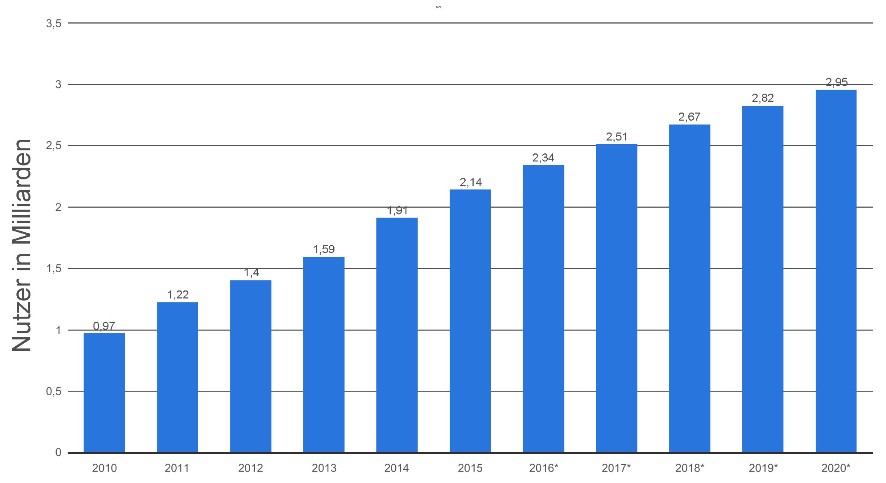

Neue Gefahren durch neue Apps und Foren wie YouNow und Snapchat
Inhalt
In den letzten 5 Jahren hat sich die Anzahl der Anwendungen in dem Bereich soziale
Netzwerke mehr als verdoppelt. Vor allem durch Mobile
Anwendungen hat sich die Benutzung dieser soziale Netzwerke dramatisch verändert.
Problematisch ist dabei, das Jugendliche sich der Konsequenz dieser Veränderung nicht
bewusst sind. Der folgender Artikel beschäftigt sich mit den Diensten YouNow und SnapChat
und stellt die Gefahren dieser Anwendungen anhand von realen Beispielen dar.

YouNow
YouNow ist eine kostenlose Live-Videostreaming-Plattform, die als App auf dem Smart-
phone oder als Desktop-Anwendung verfügbar ist. Nutzer können nach einer Anmeldung
mit der Kamera ihres Smartphones, Laptop oder Tablets Live-Streams von sich aufneh-
men und für andere Nutzer bereitstellen oder bei dessen Live-Streams zusehen. Neben
der Möglichkeit des Live-Streams bietet die Plattform einen Chat an, sodass in einem
Live-Stream alle Beteiligten miteinander kommunizieren können. Außerdem kann ein
weiterer Nutzer sich an einem Video beteiligen.
Snapchat
Snapchat ist eine kostenlose Smartphone Anwendung für Android und iOS, die es
seinen Nutzern ermöglicht Bild- sowie Videonachrichten zu versenden. Die App wurde
im September 2011 initial released und ist mittlerweile in 20 Sprachen übersetzt. Im
Gegensatz zu YouNow gibt es für Snapchat keine Desktopvariante.
Eine Besonderheit gegenüber anderen Anwendungen ist, dass die Medieninhalte nur für
begrenzte Zeit, d.h. mindestens eine und maximal 10 Sekunden für den/die Empfänger
sichtbar sind. Nach diesem Zeitraum löschen sich laut Anbieter die Dateien von selbst
beim Client. Mittlerweile ist es jedoch möglich die Inhalte mehrfach anzusehen. Zudem
kann ein Nutzer eine sogenannte „Snapchat-Geschichte” anlegen, welche 24 Stunden
sichtbar und mit bestimmten Freunden oder der gesamten Community teilbar ist.
Datenschutz und -nutzung
Auf der offiziellen Internetseite von Snapchat propagiert das Unternehmen den hohen
Stellenwert von Datenschutz. Jedoch werden bei der Nutzung von Snapchat und seinen
Services Daten von Nutzern gesammelt. Um eine hohe Transparenz zu gewährleisten,
beschreibt das Unternehmen, welche Daten zu welchen Zweck erhoben werden.
Vom Nutzer freiwillig gestellte Daten
Um Snapchat nutzen zu können braucht man
einen Nutzeraccount für dessen Erstellung man Informationen wie Name, Email-Adresse,
Passwort, Alter und ggf. Rufnummer angeben muss. Sein Profil kann man zudem noch
weiter bearbeiten, indem man ein Profilbild oder andere hilfreiche Informationen von
sich preisgibt. Diese Daten werden vom Unternehmen gespeichert. Kommerzielle Dienste
innerhalb der App benötigen ggf. Kreditkartennummern oder andere Zahlungsinformatio-
nen. Deine gesendeten Bilder und Videos können zum einen vom Empfänger gespeichert
werden (z.B. durch Screenshot) und werden ebenfalls auch von Snapchat gespeichert.
Daten, durch das Benutzen von Services
Die Anwendung sammelt eine Vielzahl von
Daten, die durch das Benutzen der Services anfallen. Das beinhaltet Nutzungsdaten wie
z.B. wie man mit anderen Personen kommuniziert oder wie der User bestimmte Services
nutzt. Außerdem werden die Inhalte jeder Kommunikation sowie gerätespezifische Daten
wie Telefonbuch, Kamera, Gallery und Standortdaten gespeichert.
Daten von Dritten
Snapchat kann Daten erfassen, die von anderen Nutzern über
einen bestimmten preisgegeben werden. Zum Beispiel, wenn ein bestimmter Nutzer A im
Telefonbuch eines Nutzers B aufgeführt wird, kann Snapchat diese Kontaktdaten mit
den Daten von Nutzer A zusammenführen.
Nutzung von Daten
Das Unternehmen verabeitet die Daten demhingegehend, dass
sie zum einen mit ihren Nutzern kommunizieren und die eigentliche Anwendung weiter-
entwickeln können. Zum anderen wird aus den Daten personalisierte Werbung verbessert,
angepasst und ausgeliefert.
Weitergabe von Daten
Die Daten von Nutzern kann von Snapchat auf folgende Weise
weitergegeben werden:
- An andere Snapchat-User: Daten zu einer Person wie Name und Alter als auch wei-
tere Daten, die der Nutzer freiwillig abgibt, können an andere Nutzer weitergegeben
werden, um bestimmte Personen schneller zu finden.
- An die Öffentlichkeit: Profilbilder, Snapcodes, und Medien, die ein Nutzer an
öffentliche Channels sendet.
- An Dritte: Snapchat finanziert sich durch Werbung. Dementsprechend werden die
personenbezogenen Daten an Drittanbieter aus der Werbebranche weitergegeben.
Auch behält sich Snapchat das Recht, Daten aus rechtlichen Gründen bei Missbrauch
oder anderen Verstößen offenzulegen.
- Aggregierte und anonymisierte Date: Diese Daten werden ebenfalls an Werbeunter-
nehmen weitergegeben.
Community-Richtlinien
Snapchat besitzt Community-Richtlinien und Standards um einen sicheren Umgang
mit der Anwendung zu gewährleisten. Werden diese nicht eingehalten, kann es zu Sperrung
bzw. Löschung des Accounts führen. Die wichtigsten Ansätze der Richtlinien werden im
Folgenden kurz zusammengetragen.
Allgemeines
Es wird darauf hingewiesen, dass die Nutzer sich klar sein sollten, was sie
über Snapchat teilen. Insbesondere wird nochmals explizit darauf hingewiesen, dass der
Gegenüber die Möglichkeit besitzt, gesendete Daten abzufotographieren oder andersweitig
zu vervielfältigen. Zudem betont das Unternehmen, dass die Inhalte legal sein sollten.
Verbotene Inhalte
Snapchat weist explizit darauf hin, dass jede Art von Pornographie
in ihrem Netzwerk verboten ist. Das beinhaltet ein Verbot zur Verbreitung von pornogra-
phischen und nicht jugendfreien Inhalt, angedeutete sexuelle Handlung, sowie Nacktheit
in Verbindung mit sexuellen Handlungen.
Jugendliche sollen besonders geschützt werden. Deswegen untersagt Snapchat das
Versenden von Nacktdarstellungen oder sexuell aufreizende Inhalte von Minderjährigen.
Zudem weist das Unterehmen darauf hin, dass es verboten ist, Bilder oder Videos von
Dritten ohne deren Zustimmung zu versenden. Auch das Drohen bzw. Mobben anderer
Nutzer wird untersagt.
Gefahren in YouNow und Snapchat
In diesem Kapitel wollen wir näher auf die Gefahren, die die Nutzung solcher
Anwendungen verursachen, eingehen und diese mit Hilfe von Beispielen aus der
Presse untermauern. Zunächst wird auf die Problematik des Datenmissbrauchs und
den Mängeln im Datenschutz beider Anwendungen hingewiesen. Anschließend
konzentrieren wir uns auf die Bedrohung für Kinder und Jugendliche innerhalb
von YouNow und Snapchat durch Pädophile.
Datenmissbrauch
Snapchat gibt in seinen AGBs an, dass die Daten, die ein User verschickt,
nur für einen bestimmten Zeitraum auf dem Endgerät des Empfängers vorhanden und
anschließend gelöscht werden. In der Praxis sieht das leider etwas anders aus:
Die Dateien werden lediglich mit einer anderen Endung versehen, damit
Gallerie-Apps diese nicht mehr finden und anzeigen können. Somit bleiben die
Inhalte auf dem Gerät vorhanden und können mit etwas Aufwand wiederhergestellt
werden [4].
Was man ebenfalls noch bedenken muss, wenn man private Bilder via Snapchat
versendet, mit dem Hintergedanken, dass sie nur kurz für den Empfänger sichtbar
sind, ist, dass der Empfänger immer noch die Möglichkeit besitzt, die Inhalte
per Screenshot oder mit einem zusätzlichen Aufnahmegerät sichern kann [4].
Ein weiterer Kritikpunkt ist Snapchats Umgang mit den Daten seiner User.
Wie bereits erwähnt sammelt das Unternehmen eine Reihe personenbezogener Daten
und der Nutzer willigt automatisch den Datennutzungsbestimmungen (siehe oben)
und damit verbundene Weiterverarbeitung und -gabe zu. Medieninhalte wie Bilder
und Videos werden bis zum Abruf vom Empfänger auf den Servern, welche in den
Vereinigten Staaten stehen, gespeichert. Innerhalb dieses Zeitraums hat
Snapchat vollen und freien Zugriff auf die Bilddateien seiner User [4].
Millionen User gehackt
Im Jahr 2014 veröffentlichten Hacker knapp 4, 6 Millionen Datensätze
mit Nutzernamen und Telefonnummern [12]. Hierbei wurde eine
Sicherheitslücke innerhalb Snapchats ausgenutzt, die es den Hackern
ermöglichte, eine Verbindung zwischen Nutzernamen und Telefonnummern
herzustellen. Die so gewonnenen Daten wurden auf einer Homepage
anonymisiert (d.h. die letzten beiden Ziffern der Telefonnummer wurden
geschwärzt) veröffentlicht. Die Intension der Angreifer war vor allem
das Bewusstsein gegenüber Sicherheitslücken zu schärfen. Daraufhin
hat Snapchat eine neue Version der App, die diese Lücke schließt,
veröffentlicht.
The Snappening
Ein Hack, der weltweit Aufsehen erregte, fand im Oktober 2014 statt
[7]. Es wurde nicht direkt Snapchat angegriffen, sondern eine
Drittanbieteranwendung namens SnapSaved.com. Mithilfe dieser App konnte
man empfangene Snaps, die sich eigentlich nach kurzer Zeit wieder
löschen sollten, dauerhaft speichern. Diese Snaps wurden auf den
Servern von SnapSaved geladen, welche dann zum Ziel eines Angriffs
wurden. Hierbei wurden angeblich 13 Gigabyte[7] Bilder und Videos
veröffentlicht. Snapchat äußerte sich zu diesem Vorfall, indem es
daraufhinwies, dass die Verwendung von Drittanbietersoftware nicht
ihren Richtlinien entspreche 10 und dementsprechend sie nicht mehr für
die Sicherheit der Daten garantieren können.
Allgemein
Ein großer Kritipunkt bei beiden Anwendungen ist das Thema Jugendschutz.
Obwohl YouNow und Snapchat in ihren Geschäftsbedinungen angeben, dass
Jugendlichen unter 13 Jahren die Anmeldung untersagt ist, wird dies nicht
kontrolliert. Beispielsweise wird bei der Anmeldung ein Geburstsdatum
verlangt, was aber nicht verifiziert wird, und durch ein beliebiges Datum
ersetz werden kann. YouNow versucht beispielsweise dagegen vorzugehen, indem
es Moderatoren einstellt. Diese agieren zum Schutz der Nutzer und sperren
Accounts, die das Mindestalter nicht einhalten, oder entfernen anstößige
Inhalte. Diese Verfahren ist aber aufgrund der schweren Verifizierung und der
Masse an Streams schwer durchführbar.
Besonders bei YouNow fällt auf, dass jeder, auch wenn man nicht registriert
ist, auf Streams zugreifen kann, d.h. der Nutzer, der das Video einstellt, hat
keine Kontrolle darüber, wer das Video ansieht. Ein weiteres Problem ist die
Anonymität, die ein solcher Dienst seinen Nutzern zur Verfügung stellt.
Beispielsweise kann man bei YouNow nicht wissen, welche Person sich hinter
einem bestimmten Pseudonym verbirgt.
Diese erwähnten Schwachstellen können und werden von Angreifern bzw.
Pädophilen ausgenutzt (siehe siehe
hier und
hier).
Informationen beschaffen/sammeln
Die erste Problematik, die wir hier betrachten möchten, ist das Beschaffen
von Informationen, die der Nutzer freiwillig bzw. unbewusst zur Verfügung
stellt.
Inbesondere bei YouNow, aber auch bei Snapchat, geschieht die Übertragung
teilweise in Echtzeit, was zur Folge hat, dass die gegebenen Informationen und
Inhalte nicht zurückgenommen werden können. Somit kann es durchaus vorkommen,
dass persönliche Daten herausgegeben oder Meinungen unbedacht geäußert werden.
Außerdem können viele Informationen durch emotionale Reaktionen preisgegeben
werden, wenn beispielsweise auf bestimmte Fragen ungewöhnlich reagiert wird.
Diese sind dann für alle sichtbar und können im Nachhinein nicht revidiert
werden [2].
Auch werden Bilder und Snaps ohne Aufforderung veröffentlicht, ohne darauf
zu achten, welche ungewollten Informationen damit übertragen werden.
Beispielsweise können hierbei Angreifer Rückschlüsse daraus ziehen, wo der
Nutzer wohnt, oder in welchem (familiären) Umfeld sich dieser befindet. Wenn im
Hintergrund Musik läuft, kann ein Angreifer ebenso den Musikgeschmack seines
Opfers kennenlernen und dies ggf. für weitere Aktionen benutzen (siehe
unten).
Abschließend kann man festhalten, dass sich daraus zwei Probleme ergeben. Zum
einen reicht es oftmals Pädophilien Bild- und Videomaterial von Minderjährigen
zu besitzen und diese für ihre Fantasien zu benutzen. Zum anderen werden
oftmals zusätzliche Informationen weitergegeben, mit denen dem Angreifer
weitere Schritte wie der Kontaktaufnahme und/oder dem Aufbauen einer Beziehung
ermöglicht werden (siehe hier).
Kennewick Middle School
In einem aktuellen Fall aus Amerika ist eine Lehrerin einer
Mittelschule angeklagt, weil sie vier Schüler sexuell belästigt und
einen sogar vergewaltigt haben soll [6]. Um Informationen über eines
ihrer Opfer zu erlangen, hat sie den Snapchataccount ihres Sohnes
verwendet.
Kontakt aufnehmen
YouNow und Snapchat bietet seinen Nutzern verschiedene Kommunikationoptionen.
Beispielsweise enthält jeder Livestream von YouNow einen öffentlichen freien
Chat, den selbst unregistrierte Nutzern verwenden können. Hierbei kann bereits
sehr einfach initialer Kontakt hergestellt werden. Zudem kann man bei beiden
Anwendungen dem Nutzer privat schreiben, d.h. die Nachrichten wird nur zwischen
den beiden Kommunikationspartnern ausgetauscht. Geht der Angreifer nun einen
Schritt weiter, kann er, beispielsweise mit den bisher gesammelten
Informationen wie Musikgeschmack oder anderen Hobbies, eine Bindung zum Opfer
und somit eine Art Beziehung herstellen. Mit Hilfe von social engineering ist
es ebenfalls möglich das Opfer zu weiteren Aktionen zu zwingen. Beispielsweise
kann der Angreifer dadurch Zugriff auf intimere Bilder und Videos erlangen.
Auch kann er somit Informationen über den Wohnort oder ähnliches erhalten, was
zur Folge hat, dass der Kontakt aus der virtuellen in die physische Welt
verlagert wird.
Weiblicher Nutzer wird vor der Kamera zum Ausziehen überredet
Im Juli 2016 hat es in Deutschland einen Fall gegeben, der sehr gut
ein denkbares Verhaltensmuster von Angreifer und Opfer innerhalb von
YouNow beschreibt [1]. Ein männlicher YouNow-Nutzer (Angreifer) fragte
eine vermeintlich 16-jährige Nutzerin (Opfer), ob sie mit ihm sexuelle
Handlungen eingehen würde. Woraufhin diese die Anfragen bejahte.
Anschließend verlangte der Angreifer, dass sie sich vor laufender
Kamera auszieht. Das Opfer stimmte zu, da der Angreifer ihr
zusicherte, dass er alle anderen Zuschauer geblockt habe und sie somit
unter sich seien. Nachdem der Angreifer sein Ziel erreicht hatte,
gesteht er seinem Opfer, dass jeder Zuschauer die Aktionen
mitverfolgen konnte. Mittlerweile stellte sich heraus, dass das Opfer
bei der Altersangabe gelogen habe [1]. Sie soll zu diesem Zeitpunkt
erst 13 gewesen sein. YouNow hat ebenfalls reagiert und den Nutzer
gesperrt
Zusammenfassung
Abschließend lässt sich festhalten, dass die angesprochenen Gefahren konkret
und allgegenwärtig sind. Wie anfangs erwähnt, sind soziale Medien inbesondere
bei Kindern und Jugendlichen stark vertreten und werden dies auch die kommenden
Jahren sein. Das hat zur Folge, dass besonders diese Nutzergruppe den Gefahren
ausgesetzt sein wird. Eine konkrete Lösung um gegen diese Probleme vorzugehen
gibt es nicht. Es gibt gibt bereits mehrere Internetseiten (siehe [2, 3]), die
versuchen darauf zu reagieren, indem sie dem Nutzer verschiedene Tipps und
Hinweise für die korrekte und sichere Nutzung aufzeigen. Ein anderer Ansatz
wird seit ein paar Jahren in der Politik und den Erziehungswissenschaften
diskutiert. Nämlich die Einführung eines Schulfachs Medien- bzw.
Internetkompetenz [5], das Schüler einen bewussten Umgang im Internet
beibringen soll und demensprechend genau diese Problematik aufgreift. Aktuell
liegt die Verantwortung hauptsächlich bei den Eltern und dass sie ihren Kinder
verantwortungsbewussten Umgang mit neuen Medien beibringen aber auch
vorleben.
Quellen